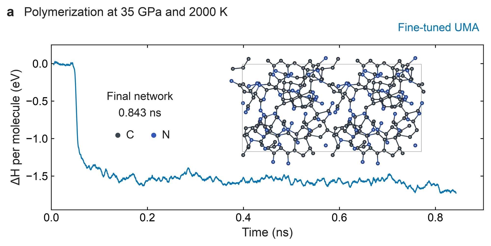

High-pressure polymerization
Polymerization of compressed acetonitrile
Crystalline acetonitrile polymerizes when it is compressed and heated, yet DFT molecular dynamics covers only picoseconds and does not reach these reactions. We combined reactive molecular dynamics with a fine-tuned UMA potential, automated path refinement and DFT checks to identify the steps that build the polymer and to follow how pressure changes them.

Findings
Hydrogen transfer and chain growth
DFT dynamics at 35 GPa, heated to about 1,100 K over 10.7 ps, forms no bonds, because these reactions require nanoseconds. The reactive potential ANI-1xnr reaches them but makes them too easy, and its rates imply a barrier of about 1.1 eV against 2.9 eV from DFT. We therefore relabeled its frames with PBE-D3 and fine-tuned UMA on them, which reduced the barrier error over 28 checked paths from 0.17 to 0.10 eV and the force error from 0.040 to 0.019 eV/Å.
With the fine-tuned potential, an early hydrogen transfer from a methyl group to nitrogen creates N–H donors. C–C growth through such a donor costs 0.68–0.88 eV, whereas growth that must break a methyl C–H bond costs 3.1–3.4 eV. Pressure lowers both barriers between 5 and 35 GPa but leaves this order unchanged.
Forming the first bond in the perfect crystal requires about 3.0–3.4 eV. This value is consistent with the onset temperatures measured in heated diamond-anvil cells, although it cannot explain conversion at room temperature, which may instead begin at defects or at the gasket.
Polymerization at 35 GPa
From the trajectory to the individual steps
At 2000 K the enthalpy of the cell falls by about 1.5 eV per molecule within the first 0.1 ns as the molecules polymerize. To resolve the individual steps, we assembled nine connected paths from M0 to a pentamer-containing state, independently of this trajectory, and checked every stationary point with a DFT single point.

Polymerization at 35 GPa and 2000 K. Enthalpy per molecule along the fine-tuned UMA trajectory, with the final network.
The reacting molecules of four states along the path, rendered from the path geometries. Clicking a structure, or any point of the chart, opens the whole cell in 3D.
The first dimer requires 2.66 eV with UMA and 2.67 eV with DFT, and the later additions become easier. The last addition uses an N–H group already present in the oligomer as the hydrogen donor, with a barrier of 0.68 eV (0.66 eV with DFT), and the pentamer-containing cell lies 1.37 eV below M0. The earlier hydrogen transfers therefore prepare a donor that makes the subsequent addition easier.
Method
Reactive molecular dynamics of the 288-atom cell ran at 2000–2900 K to reach reactions on nanosecond time scales. ReactionFlow detected each bond change and refined it with variable-cell climbing-image NEB at the pressure of the cell. A barrier was kept only when its saddle had one negative mode and connected the expected states. PBE-D3 single points along 24 bands give a mean error of −0.04 eV and an RMSE of 0.10 eV, with the largest deviations on spin-polarized paths.
- Cell
- β-acetonitrile, 48 molecules (288 atoms), 5–35 GPa
- Potential
- UMA-M fine-tuned on 8,041 PBE-D3 frames, with ANI-1xnr for discovery
- Paths
- Variable-cell climbing-image NEB with saddle checks
- DFT
- PBE-D3 single points along the bands (VASP)
- Experiment
- High-pressure Raman and neutron work within the LDRD project